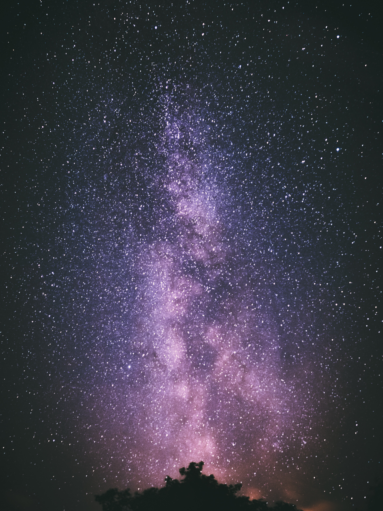
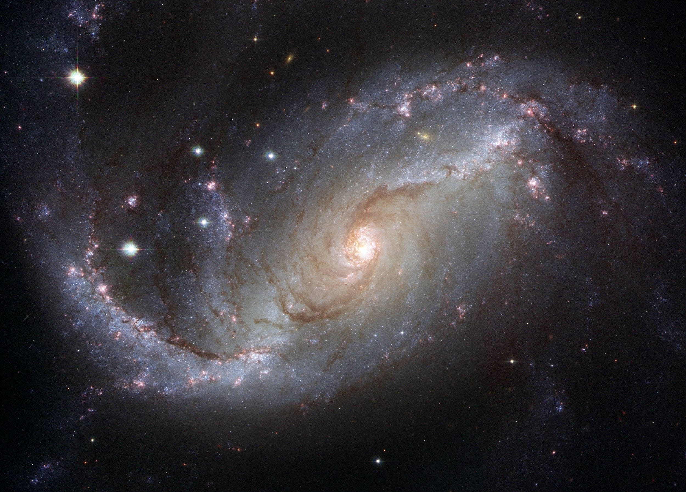
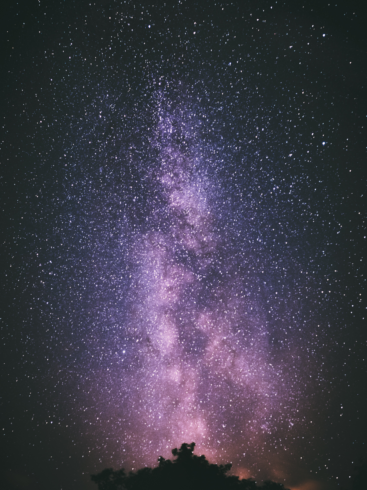
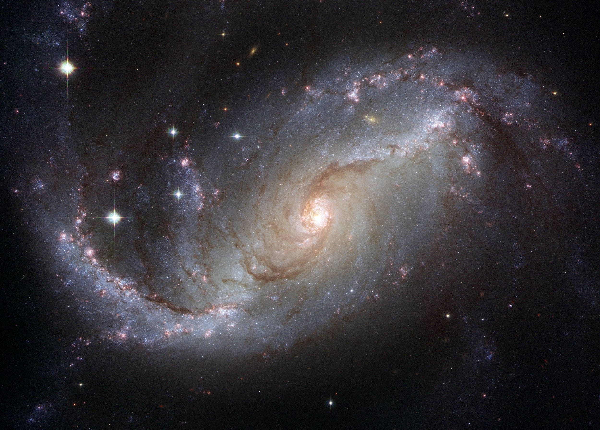
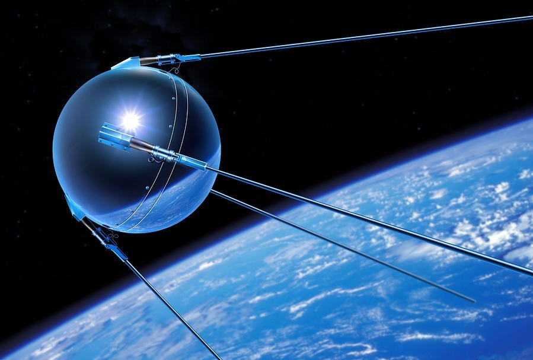
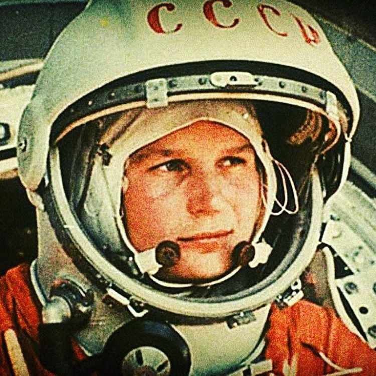
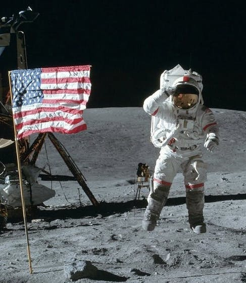
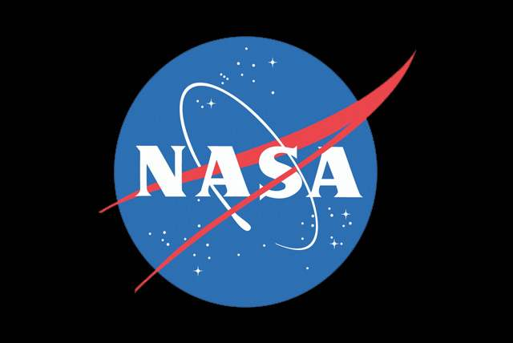

WELCOME TO YOUR JOURNEY THROUGH SPACE
Outer space, or just space, is the expanse that exists beyond the Earth and outside of any astronomical object. Outer space is not completely empty—it is a hard vacuum containing a low density of particles, predominantly a plasma of hydrogen and helium as well as electromagnetic radiation, magnetic fields, neutrinos, dust, and cosmic rays.
 



history of SPACE EXPLORATION
First Satellite in Space Sputnik

History changed on October 4, 1957, when the Soviet Union successfully launched Sputnik I. The world's first artificial satellite was about the size of a beach ball (58 cm.or 22.8 inches in diameter), weighed only 83.6 kg. or 183.9 pounds, and took about 98 minutes to orbit the Earth on its elliptical path. That launch ushered in new political, military, technological, and scientific developments. While the Sputnik launch was a single event, it marked the start of the space age and the U.S.-U.S.S.R space race.
First Man in Space Yuri Gagarin

Yuri Gagarin was the first person to fly in space. His flight, on April 12, 1961, lasted 108 minutes as he circled the Earth for a little more than one orbit in the Soviet Union's Vostok spacecraft. Following the flight, Gagarin became a cultural hero in the Soviet Union. Even today, more than six decades after the historic flight, Gagarin is widely celebrated in Russian space museums, with numerous artifacts, busts and statues displayed in his honor. His remains are buried at the Kremlin in Moscow, and part of his spacecraft is on display at the RKK Energiya museum.
First Man on the Moon Neil Armstrong

Apollo 11 blasted off on July 16, 1969. Neil Armstrong, Edwin "Buzz" Aldrin and Michael Collins were the astronauts on Apollo 11. Four days later, Armstrong and Aldrin landed on the moon. They landed on the moon in the Lunar Module. It was called the Eagle. Collins stayed in orbit around the moon. On July 20, 1969, Neil Armstrong became the first human to step on the moon. He and Aldrin walked around for three hours. The two astronauts returned to orbit, joining Collins. On July 24, 1969, all three astronauts came back to Earth safely. President Kennedy's wish came true within 10 years. Humans had walked on the moon.
All About NASA
SPACE Video
NASA stands for National Aeronautics and Space Administration. NASA was started on October 1, 1958, as a part of the United States government. NASA is in charge of U.S. science and technology that has to do with airplanes or space. Being an astronaut is probably the best-known job at NASA, but astronauts make up just a small part of the workforce. A lot of engineers and scientists work at NASA. People are doing other jobs, too, like secretaries, writers, lawyers and even teachers. NASA satellites help people understand weather patterns on Earth. NASA also helps develop and test new aircraft. Some of the airplanes have set new records. NASA works to make air travel faster and safer. In 2018, NASA turned 60 years old!
